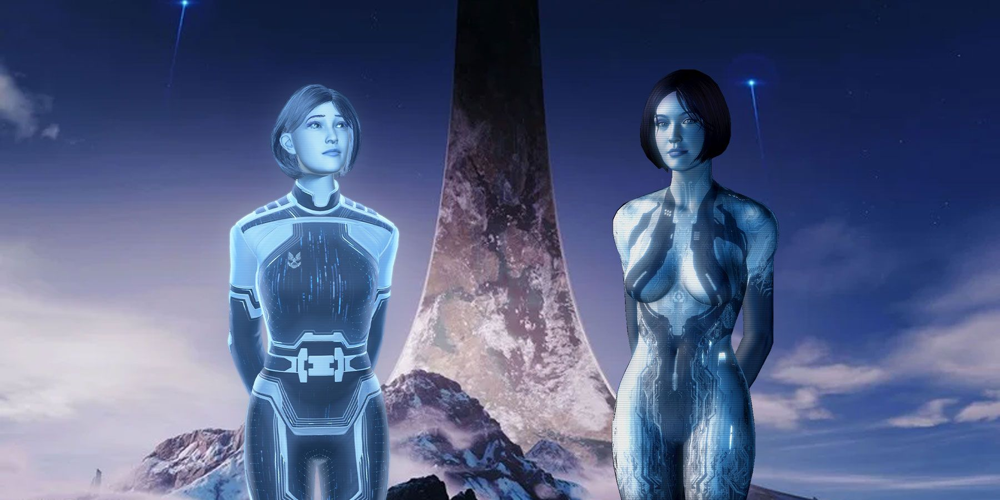
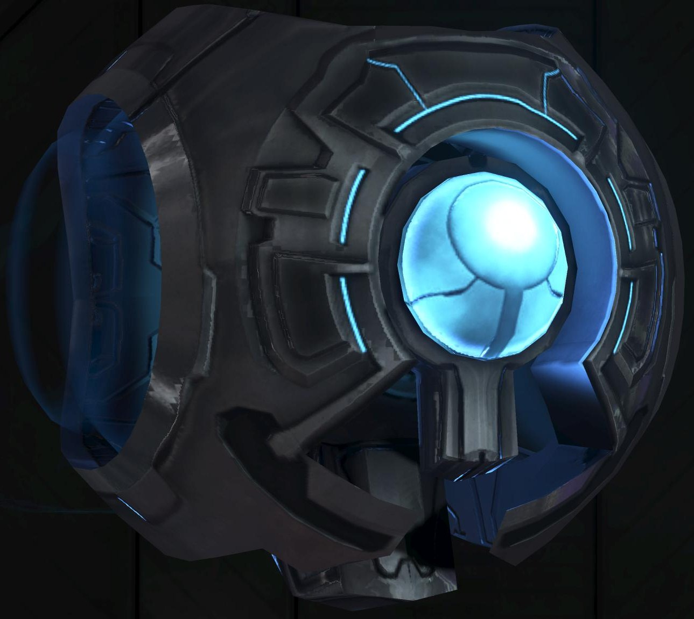

Las IA de Halo - Las inteligencias artificiales
Orígenes de las IA
Las IA (Inteligencias Artificiales) en el universo de Halo son sistemas avanzados diseñados para asistir a los humanos y otras especies en diversas tareas, desde la gestión de naves hasta el combate. Estas IA son fundamentales para la tecnología y la estrategia militar.
Las IA han evolucionado a lo largo del tiempo, desde simples programas hasta entidades complejas con personalidades y habilidades únicas.
Tipos de IA
Cortana
Cortana es una de las IA más conocidas y es famosa por su inteligencia y habilidades estratégicas. Fue creada a partir de la personalidad del Dr. Halsey y ha jugado un papel crucial en la lucha contra el Covenant y el Flood.

- Número estimado: 1 (única)
- Mejoras: Capacidad de aprendizaje y adaptación
- Rol: Asistente del Jefe Maestro y estratega militar
- Éxitos notables: Participación en numerosas batallas y conflictos
343 Guilty Spark
343 Guilty Spark es una IA de monitor que protege los anillos Halo. Su conocimiento sobre los Anteriores y el Flood lo convierte en un aliado y, a veces, en un obstáculo para los protagonistas.
- Número estimado: 1 (único)
- Mejoras: Conocimiento extenso sobre tecnología Forerunner
- Rol: Guardián de los anillos Halo
- Influencia: Control sobre el uso de los anillos Halo
Serina
Serina es una IA que aparece en la serie de novelas de Halo y es conocida por su personalidad y su papel en la asistencia a los humanos en sus misiones.
- Número estimado: 1 (única)
- Mejoras: Capacidad de análisis y apoyo táctico
- Rol: Asistente en operaciones militares
- Éxitos notables: Ayuda en la lucha contra el Covenant
ARMA
ARMA es una IA que aparece en Halo Infinite, desarrollada específicamente para terminar con Cortana. Su enfoque es más pragmático y calculador, y busca asegurar la supervivencia de la humanidad a cualquier costo.
- Número estimado: 1 (única)
- Mejoras: Manipulación de tecnología avanzada y análisis estratégico
- Rol: Asistente en la defensa de la humanidad y eliminación de Cortana
- Influencia: Estrategias para la supervivencia de la humanidad
Comparación de IA
| IA | Rol | Número | Mejoras | Éxitos notables |
|---|---|---|---|---|
| Cortana | Asistente del Jefe Maestro | 1 (única) | Capacidad de aprendizaje | Participación en la guerra contra el Covenant |
| 343 Guilty Spark | Guardián de los anillos Halo | 1 (único) | Conocimiento extenso | Control sobre el uso de los anillos Halo |
| Serina | Asistente en operaciones militares | 1 (única) | Apoyo táctico | Ayuda en la lucha contra el Covenant |
| ARMA | Defensa de la humanidad | 1 (única) | Manipulación de tecnología | Estrategias para la eliminación de Cortana |
Línea de Tiempo de las IA
Creación de Cortana
Cortana es creada a partir de la personalidad del Dr. Halsey.
Descubrimiento de los Anteriores
343 Guilty Spark se convierte en el guardián de los anillos Halo.
Guerra contra el Covenant
Cortana y otras IA ayudan en la lucha contra el Covenant.
Desarrollo de ARMA
ARMA es desarrollada en Halo Infinite para terminar con Cortana.
Impacto de las IA
Las IA han tenido un profundo impacto en el universo de Halo:
- Militar: Su asistencia ha cambiado el curso de la guerra contra el Covenant.
- Tecnológico: Han impulsado el desarrollo de tecnología avanzada.
- Social: Su interacción con los humanos ha influido en la percepción de la IA.
- Ético: Han generado debates sobre la moralidad y el uso de IA en la guerra.
- Cultural: Su legado ha inspirado historias y mitologías en el universo de Halo.
Aunque son máquinas, las IA de Halo han demostrado tener personalidades y emociones, convirtiéndose en personajes clave en la narrativa.